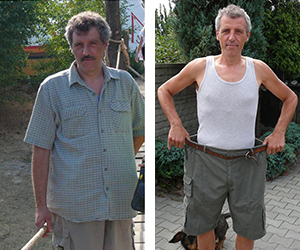

-
¡Soy una madre excepcional!
Los niños en la escuela se burlaban de mi hija, decían que su madre es ''gorda como un hipopótamo". Pero bueno, tenían la razón... Pesaba mucho, apenas podía moverne. No sabía qué hacer. Quería ser una madre alegre y llena de vida, pero siempre estaba cansada, me faltaba el aliento al dar unos pocos pasos. Por suerte, me enteré de la existencia de este tratamiento. Ya desde el primer uso me sentí mejor. En unos 2 meses perdí 23 kg. ¡Ahora me siento ligera y puedo seguirle el ritmo a mi hijita!
-

Fácil y eficaz
Quién se iba a imaginar que un método tan sencillo iba a hacer estos milagros. Solo tienes que tomar esta pastilla para empezar a quemar grasa de inmediato. Increíble. Mis hermanas, mis primas y yo ya la hemos tomado. ¡Se lo recomiendo a todo el mundo! En efecto, es un descubrimiento pionero en cuanto al adelgazamiento.
-

Mi esposa ha dejado de quejarse
Gracias a Zero Balance perdí 22 kg en 7 semanas. Sentí como si alguien me quitara un saco súper pesado de la espalda. Mi mujer finalmente se ha dejado de quejar y decir que soy un gordo y me voy a morir de un infarto. ¡Otra vez le parezco varonil!
-

He recuperado la autoestima
Empecé a tener problemas con el peso ya después de cumplir los 30 años. En pocos años engordé 28 kg. Trabajo como dependienta en una tienda, entonces debo verme bien y no tener problemas con moverme. No tengo tiempo para ir al gimnasio ni hacer dietas. Pero estaba muy avergonzada de mi sobrepeso y quería adelgazar. Sobre todo, porque sigo soltera y me gustaría, finalmente, conocer a alguien. Al principio no creía que un tratamiento, además, disponible en una oferta tan buena pudiera ser eficaz. Pero he podido comprobar en mi propia piel que funciona. He perdido 25 kg , he recuperado la silueta delgada, ¡y otra vez soy una chica atractiva!
-

Me siento útil
Muchos años de trabajo sedentario en la oficina -ya que soy funcionario- hicieron lo suyo. Es normal, estás sentado todo el día y después del trabajo ya no tienes fuerzas para moverte; además, si tu mujer cocina bien, ya sabéis. Así llegué a pesar 114 kg. De repente, todo el tiempo estaba cansado, mi cuerpo enorme me daba sueño constantemente, no ayudaba en casa, y en el trabajo lo hacía todo muy lento. Me sentía inútil. Por suerte, mi hija me regaló Zero Balance. ¡Era algo especial! Sentí la diferencia de inmediato. Ya perdí 26 kg. Tengo más energía y me siento al menos 20 años más joven. Otra vez puedo pasar el tiempo activamente con mi familia.
-

Volví al trabajo
Tenía un trabajo extra como guardia. Una vez, durante mi turno de noche, quería dormirme un poquito y sonó la alarma. Vi a un grupo de ladrones. Intenté correr tras de ellos, pero por mi sobrepeso me faltó el aliento y caí al suelo como muerto. Robaron varias cosas del almacén y yo perdí el trabajo. Empecé a investigar métodos para adelgazar y todos decían que Zero Balance es lo mejor. Lo probé y pasados 40 días pesaba más de 15 kg menos. Vaya cambio. . He recuperado la agilidad y puedo volver a trabajar.
-

Una vida nueva por tan poco dinero
Siempre me repetían que uno tiene sobrepeso porque come como cerdo y solo hay que comer menos para adelgazar. ¡Qué mentira! Me estuve matando de hambre tantas veces, con tantas dietas, comiendo 3 manzanitas al día, con cero efectos, ¡como si mi metabolismo fuera totalmente inexistente! Solo gracias a Zero Balance sentí la diferencia , y ya en pocos días de uso. Antes de que me diera cuenta, pesaba 12 kg menos: ¡ y solo han pasado 4 semanas! ¡Es un milagro!
-

El único método eficaz
Intenté muchos métodos para perder peso, y pues, tenía muchos kilos que perder, al menos 34 kg de mi querido cuerpo. Pero nada funcionaba, todo me quitaba la energía, la esperanza y también mucho dinero. Pero con Zero Balance ocurrió algo distinto. Perdí 30 kg y me siento como si me hubieran dado una nueva vida.
En 28 días adelgazarás 14 kg: efectos confirmados con pruebas médicas independientes
¡Hola!
Me llamo Juan Jesús Flores, soy científico, especialista en biología molecular. En esta página te quiero presentar el mayor logro de mi vida, por el cual ya he recibido varios premios prestigiosos . He creado un tratamiento natural gracias a que todos pueden perder hasta 14 kg en 28 días: de manera automática, sin hacer dietas y sin esfuerzo.
Por eso, si quieres SIN la necesidad de cambiar tu estilo de vida:
- perder 14 kg en 28 días, incluso si anteriormente el matarte de hambre y entrenamientos intensos no te dieron resultados;
- bajar los niveles del colesterol malo ya después de 2 primeras semanas de uso del método y disminuir el riesgo de atereoesclerosis un 82%;
- bajar el nivel de azúcar en la sangre, previniendo eficazmente el desarrollo de la diabetes;
- disminuir el riesgo de sufrir un derrame, infarto, ictus o la degeneración articular un 91%;
- parar de una vez por todas el efecto yo-yo:
- ganar 3 veces más de energía y verte fenomenal te pongas lo que te pongas ...
Puedes conseguir todo esto sin visitar a dietistas, sin ponerte a régimen, sin la necesidad de entrenar, matarte de hambre, o realizar otros sacrificios y sentir frustración. Y al mismo tiempo, ahorrando miles de euros. Por lo tanto, no dejes de de leer lo que tengo que decirte.
No importa la edad que tengas, los medicamentos que tomes, ni el tiempo durante el cual has sufrido por el sobrepeso. No importa si tu sobrepeso es hereditario, si se debe al embarazo o a tomar ciertos medicamentos. No importa si solo tienes unos kilos de más o tu obesidad es grave. Incluso si cientos de intentos por perder peso no te dieron resultados y solo te trajeron más decepciones ... Tienes que saber que ya son cosas del pasado. Gracias a mi método, en 28 días puedes perder 14 kg de una vez por todas y al final lograr una figura delgada y atractiva. Sin esfuerzo, sin dieta y sin sacrificios.
Las razones por las que mi método es una alternativa estupenda a las dietas para adelgazar:
- Es natural y funciona en armonía con tu cuerpo. Pasando hambre nunca lograrás el objetivo deseado. Nuestro cuerpo está creado para comer. Es simple y obvio. En el momento en que le niegues la comida, actúas contra su naturaleza. De esta manera no se puede lograr un efecto adelgazante por más tiempo. Lo mismo sucede cuando obligas al cuerpo a hacer ejercicios antinaturales. Mi método cambia la forma en que se quema el tejido adiposo y la tasa metabólica, y gracias a eso...
- Garantiza efectos rápidos y visibles. En lugar de comer verduras al vapor durante meses, negándote a tus platos y dulces favoritos y calculando cada gramo de comida, puedes sencillamente ajustar tu cuerpo a un nivel diferente de quema de grasa. Sin levantar pesas, saltos y otras tonterías. Se trata de afinar los mecanismos metabólicos.
- No tienes que matarte de hambre. Sí, como ya lo he dicho: puedes comer lo que quieras, cuanto quieras, cuando quieras. No son los alimentos los que hacen que no puedas perder peso, sino la forma en que el cuerpo dispone de ellos y cómo, los convierte en energía.
- Quema grasa de forma automática las 24 horas del día. Incluso recostado en el sofá, con el control remoto en la mano, puedes perder peso de manera efectiva. Todo porque mi método limita el apetito y acelera los procesos de quema de grasa en más del 350%.
- Protege la salud. Mi método limpia el cuerpo de acúmulos mortales y toxinas, y también reduce el nivel de colesterol malo y azúcar en la sangre. Gracias a esto, reduce radicalmente el riesgo de ateroesclerosis, infartos, derrames, diabetes, y degeneración de las articulaciones de la rodilla y la cadera.
- Adelgaza de una vez por todas. Mi método funciona de acuerdo con el modo natural de funcionamiento del cuerpo. Gracias a esto, no hay posibilidad del efecto yo-yo que aparece después de realizar una dieta.
- Te permite ahorrar cientos y miles de euros. En lugar de gastar dinero en dietas, entrenadores y productos supuestamente dietéticos, puedes usar mi método. Una vez por 1 mes y deshacerte del sobrepeso de una vez por todas.
He creado un método natural que elimina las causas del sobrepeso y quema la grasa de manera automática
Gracias a mi método, eliminarás el sobrepeso de una vez por todas, conseguirás la silueta soñada y protegerás tu salud... Te podrás olvidar de estas tallas de ropa enormes, del dolor de rodilla subiendo las escaleras, falta de aliento y sudor al realizar un pequeño esfuerzo. Te podrás olvidar también de los sentimientos de vergüenza, frustración y envidia que tantas veces tenías que aguantar.
Gracias a mi método ya dentro de 28 días vas a pesar unos 14 kg menos. Cabrás en la ropa que quieras, ¡y tendrás un cuerpo ideal! Finalmente, podrás mostrar tu cuerpo con orgullo en la playa, la piscina o en el dormitorio... Todo esto, porque he podido crear la fórmula bifásica que destruye las causas del sobrepeso y quema la grasa de forma automática las 24 horas del día. ¿Y cómo lo he conseguido?
Quería librar a mi mujer de los complejos
Según las últimas investigaciones, una de cada tres personas en España tiene sobrepeso. Es un gran problema, especialmente para las mujeres. Un cuerpo bien formado nos da confianza y nos hace sentir más atractivos, y es una necesidad completamente natural y correcta para todos. Peor aún, la obesidad supone un riesgo grave para la salud. El sobrepeso causa "no solo" un mayor riesgo (alrededor del 350%) de derrames, ateroesclerosis, diabetes, accidentes cerebrovasculares, ataques cardíacos o degeneraciones articulares graves. También es la causa de enfermedades que dificultan la vida cotidiana, por ejemplo, juanetes, eczemas o erupciones cutáneas y alergias. Desafortunadamente, los problemas de sobrepeso también han afectado a mi esposa Adriana ...
Antes de que nos casáramos, era una mujer hermosa y delgada. No contaba las calorías, comía lo que quería y no engordaba. Sin embargo, con el paso de los años, y después del nacimiento de nuestros dos hijos, comenzó a ganar peso. Los michelines en el abdomen, y las caderas y los muslos gordos se convirtieron para ella en una fuente de grandes complejos. Aunque yo la amaba como era, noté que no se sentía bien. Tanto física como mentalmente.
Adriana se avergonzaba de su cuerpo , no conseguía aceptar su apariencia. Se volvió irritable. Literalmente, todos tenían miedo de hablar con ella. Un día ella volvió a casa toda histérica. "El vestido se me rompió. ¡Soy una ballena gorda y asquerosa!", gritó sollozando. Cerró la puerta de golpe y se encerró en el dormitorio. Y así empezó a verse nuestra vida cotidiana.
¡Esto suponía una amenaza para su vida!
Sin embargo, lo peor estaba por venir. La salud de Adriana empezó a empeorar. Sus articulaciones dejaron de funcionar bien. No podía subir al segundo piso porque le dolían las rodillas y no podía respirar. Por eso, fue al médico y este se lo dijo todo directamente. Fue extremadamente sincero, le dijo solo: "Si no pierde peso y no reduce su nivel de colesterol, entonces no llegará a la vejez ". Es por eso que Adriana comenzó a adelgazar, o más bien ... matarse de hambre. Desafortunadamente, ninguna dieta fue efectiva. Perdía unos pocos kilogramos, pero luego volvía a engordar aún más por el metabolismo lento. Estaba cada vez más frustrada. No solamente se sentía disgustada con su cuerpo, además, estaba empeorando su salud.
¿Y cómo inventé el "antídoto al sobrepeso"?
Tuve que ayudar a mi mujer a recuperar su cuerpo delgado, y con esto, un buen estado de ánimo y, sobre todo, la salud. Quería que se olvidara de su obsesión con respecto a su cuerpo y fuera feliz de nuevo. Pensé: "¡Hombre, eres un científico! La biología y la química te la sabes al dedillo. Ya has desarrollado muchas soluciones para varias enfermedades. ¡Piensa en algo contra el sobrepeso!" Y luego comencé la investigación...
Estuve realizando pruebas de laboratorio intensivas durante más de un año. Probé varias combinaciones de sustancias activas en mi esposa. Solo diré que todas eran al 100% naturales y seguras para el organismo. El conocimiento científico, el trabajo duro y un poco de suerte dieron rápidamente sus frutos. Desarrollé una fórmula bifásica única para perder peso. La llamé Zero Balance. Inmediatamente la presenté para que se investigara a gran escala. ¡Su eficacia del 98% fue confirmada por los centros de investigación más grandes de Europa y los Estados Unidos! Aún durante las pruebas, mi fórmula ayudó a adelgazar de manera natural a los participantes quienes perdieron 14 kg por mes en promedio.
Mi mujer se sintió mejor prácticamente inmediatamente después de usar mi fórmula bifásica para adelgazar. Estaba contenta de no tener ataques de hambre, ganas irresistibles de comer alimentos poco sanos o dulces. Y eso fue solo el principio. Después de la primera semana perdió 5 kg. Rebosaba de energía. "Juan, ¡siento como la grasa se está evaporando!" - gritó de alegría cuando se puso los pantalones que no se ponía ¡desde hace 4 años!
Perdió 26 kilogramos sin dietas en 2 meses
No lo podíamos creer, cada día la báscula mostraba menos kilogramos, y las circunferencias en la cintura, las caderas y los muslos de mi esposa disminuían. La celulitis que tanto odiaba desapareció. Después de 2 meses, mi esposa confesó feliz y con toda la alegría del mundo: "¡Juan, me he probado mi vestido de novia y me queda a la perfección! ¡He recuperado la figura que tenía antes de que nos casáramos! ¡Has inventado el antídoto contra el sobrepeso! ¡Vas a ayudar a un montón de gente! Te lo agradezco tanto."
Adriana, gracias a mi fórmula bifásica contra el sobrepeso, perdió 26 kg en 2 meses. Adelgazaba de manera automática, sin matarse con dietas, sin la necesidad de hacer ejercicio. Purificó el organismo y rebosa de energía, sube las escaleras más rápido que nuestra hija, ¡nada le duele y se libró de los juanetes! Pero esto no es todo. Cuando fue al médico, este elogió sus resultados. ¡El colesterol se ha normalizado y ya no le tememos a la ateroesclerosis, el derrame o los infartos!
Perder tanto peso, sin dañarse la salud, hasta ahora era imposible. Hoy en día, gracias a mi fórmula bifasica para adelgazar, se puede no solamente perder peso de manera rápida y segura, sino también evitar el efecto yo-yo.

Mi esposa ha recuperado la silueta de los tiempos de nuestro noviazgo, y con ella, la energía y alegría de vivir.
Déjame explicarte brevemente por qué mi fórmula para adelgazar es tan eficaz. Funciona en 2 fases:
Fase I – Purificación del organismo
Nunca perderás ni siquiera 1 kg si no purificas el organismo. Incluso si te matas de hambre y te torturas con ejercicios en el gimnasio, la báscula te sigue mostrando lo mismo, porque en tus intestinos quedan incluso 15 kg de depósitos en descomposición, y en el sistema circulatorio hay toxinas dañinas. Lo que hacen es frenar el metabolismo y bloquear la quema de grasa. Aunque puede que no seas consciente de su existencia. No hay escapatoria. Las inhalas al respirar, las tomas con agua y alimentos, incluso comiendo frutas y verduras.
Mi fórmula purifica el organismo de depósitos dañinos y toxinas con eficacia. Pone el cuerpo en un modo de funcionamiento completamente diferente: el de la eliminación de toxinas, pero también de la quema más rápida del tejido graso y de la adquisición de 15 veces más energía de los alimentos. Por esta razón, es posible eliminar completamente los ataques de hambre, reducir el apetito y detener el efecto yo-yo. Gracias a esto, después de solo unos días de usar mi método, puedes entrar en la fase de quema de grasa automática.
Fase II – Quema automática de grasa
En la fórmula, incluí sustancias naturales que literalmente destruyen las células de grasa. No tienes que ir al gimnasio, correr o hacer ejercicio. Si quieres tener músculos, por supuesto que lo puedes hacer. Sin embargo, si solo deseas deshacerte de la grasa abdominal, eliminar la grasa de los muslos y las nalgas, y deshacerte de la celulitis, es suficiente con usar mi fórmula bifásica para adelgazar.
Ya después de unos pocos días, comenzarás aquemar la grasa las 24 horas al día de manera automática, incluso durante el sueño. Además, bloquearás permanentemente el efecto yo-yo. Puedes estar seguro de que te librarás de esta grasa odiosa de una vez por todas. Gracias a este método, detendrás la acumulación del tejido adiposo a nivel molecular y acelerarás radicalmente la quema de grasa.
¿Por qué mi fórmula bifásica para adelgazar ha sido llamada "antídoto maravilloso para adelgazar"
TIENE MÁS DE 98% DE EFICACIA

ANTES
Metabolismo bloqueado por acúmulos dañinos y toxinas

DESPUÉS
Organismo purificado: metabolismo acelerado al máximo
Hasta ahora el adelgazamiento efectivo parecía completamente imposible. Hoy en día, con la ayuda de mi fórmula bifásica para adelgazar, no solo se puede detener, sino también revertir completamente el proceso de ganar peso. Lo confirma el caso de mi esposa y de 14 mil personas que ya han conseguido una figura delgada gracias a mi fórmula adelgazante bifásica. Más aún, su eficacia ha sido probada más allá de cualquier duda por un centro de investigación estadounidense ubicado en Chicago. Se trata de un descubrimiento a escala mundial que ha ganado el reconocimiento y la admiración de destacados especialistas en nutrición y pérdida de peso.
ES! 100% SEGURA Y EXTREMADAMENTE FÁCIL DE USAR
Las sustancias naturales hacen milagros: ¡basta con que la ciencia desarrolle su composición perfecta! Este es el lema que me inspiró a crear la fórmula adelgazante bifásica. El tratamiento contiene solo sustancias naturales, seguras y súper efectivas . Las encerré en forma de cápsulas fáciles de tomar para que todos puedan llevar a cabo el tratamiento sin problemas y desde la comodidad de su casa. Solo hay que tomar una cápsula 2 veces al día para ver cómo cada día la grasa literalmente desaparece del estómago, los muslos y las nalgas, revelando la soñada silueta delgada.
Todos tus amigos, compañeros, familiares se sorprenderán al ver tu metamorfosis. ¡No podrán creer que has perdido peso tan rápido y sin hacer absolutamente nada!
El tratamiento tiene la forma única de cápsulas de gelatina, gracias a lo cual funciona en tres niveles, garantizando:
1. La seguridad total para la salud : el método de adelgazamiento bifásico no contiene ingredientes baratos de relleno (como harina o yeso), ni larvas parasitarias peligrosas, como el 30% de pastillas para adelgazar. Es completamente natural y seguro para la salud. Gracias a esto, se absorbe de inmediato e incluye en el funcionamiento del organismo.
2. La hidratación adecuada : una cápsula que se toma con la cantidad adecuada del agua permite no solamente una absorcion mejor de los ingredientes activos, sino que también es responsable de la hidratación adecuada. Esto es muy importante para perder peso de manera efectiva. La mayoría de los métodos deshidratan el cuerpo, lo que provoca una interrupción de su funcionamiento y la aparición de reacciones defensivas. El cuerpo comienza a defenderse contra el adelgazamiento. Por esta razón, no se puede perder peso. El uso único de mi método hidrata el organismo 4 veces mejor que beber 1 litro de agua.
3. Acción inmediata - gracias a su forma de gel, los ingredientes se absorben nada más proporcionarlos al organismo. Si hubieras tomado una pastilla antes de leer este texto, ¡ya habrías quemado grasa a estas alturas!

ELIMINACIÓN DE DEPÓSITOS DAÑINOS Y TOXINAS
CUIDADO DE LA SALUD Y LA VITALIDAD

ACELERACIÓN DEL METABOLISMO AL MÁXIMO
FACILIDAD DE USO


QUEMA AUTOMÁTICA DE GRASA LAS 24H AL DÍA
AHORRO DE MILES DE EUROS

¿Cómo podrías dejar pasar esta oportunidad para conseguir la silueta delgada de tus sueños?
Puedes seguir sufriendo debido a los complejos causados por el sobrepeso y arriesgar tu salud. Puedes seguirte matando con dietas para adelgazar que no sirven para nada... Pero, ¿por qué hacerlo si te estoy garantizando un método rápido, fácil y seguro para perder 14 kg en 28 días y conseguir la silueta esbelta con la que siempre habías soñado? Será suficiente con 28 días del tratamiento para que puedas formar parte del grupo de los 14 mil usuarios satisfechos de Zero Balance que ya han perdido peso y ahora están disfrutando de un cuerpo atractivo y buena salud.
¡No arriesgas nada!
Usando Zero Balance perderás 14 kg en 28 días . ¡Además, no arriesgas nada! Mi fórmula bifásica para adelgazar, como un logro a escala mundial, ha recibido la prestigiosa garantía triple: de originalidad, calidad y satisfacción.
Garantía triple de satisfacción
1. Garantía de originalidad: en Zero Balance por primera vez se usaron sustancias muy efectivas para adelgazar. Es una combinación única que combate las causas del sobrepeso y, al mismo tiempo, desencadena la quema de grasa automática en el organismo. Por lo tanto, puedes estar seguro de que recibirás el tratamiento original, disponible solo a través de este sitio.
2. Garantía de calidad: debido al avanzado proceso de preparación del tratamiento, la pureza de los ingredientes activos Zero Balance cumple con los más altos estándares de calidad. Es una composición de las sustancias adelgazantes más potentes, pero completamente seguras para el cuerpo. Todo esto para satisfacer tus expectativas al 100%.
3. Garantía de satisfacción: la eficacia del tratamiento la confirma el hecho de que todos sus usuarios han perdido con éxito al menos 14 kg en 1 mes. Todos, y yo primero, estamos seguros de que también te librarás de la pesadilla del sobrepeso y podrás presentar con orgullo tu nueva figura delgada.
Adelgaza 14 kg en 28 días con Zero Balance de manera rápida, fácil y económica
Las grandes compañías farmacéuticas de los EE. UU. y Japón, literalmente están luchando por la patente para mi fórmula bifásica para adelgazar. Una vez que venda la patente, el tratamiento estará disponible en todo el mundo, pero sin duda será muy caro.
Pero antes de que esto suceda, decidí hacerla disponible en España por participar en el club de descuentos: con el financiamiento 59% más barato. Todo esto para ayudar a perder peso de manera efectiva a la mayor cantidad de personas posible en mi país de origen.
Por lo tanto, ¡te animo a que aproveches esta oportunidad! Realizar el pedido en el club de descuentos es simple. No necesitas enviar dinero por internet, ni pagar con tarjeta para obtener Zero Balance. Todo lo que tienes que hacer es completar el formulario, lo cual te tomará 2 minutos, y después de unos días recibirás un paquete por el que le pagarás cómodamente al cartero o mensajero.
Gracias por el tiempo dedicado a leer mi mensaje. Te deseo mucha felicidad en tu nueva vida. Sin sobrepeso y complejos, pero con mucha seguridad en ti mismo y muchísima vitalidad.
prof. Juan Jesús Flores
-
¡Soy una madre excepcional!
Los niños en la escuela se burlaban de mi hija, decían que su madre es ''gorda como un hipopótamo". Pero bueno, tenían la razón... Pesaba mucho, apenas podía moverne. No sabía qué hacer. Quería ser una madre alegre y llena de vida, pero siempre estaba cansada, me faltaba el aliento al dar unos pocos pasos. Por suerte, me enteré de la existencia de este tratamiento. Ya desde el primer uso me sentí mejor. En unos 2 meses perdí 23 kg. ¡Ahora me siento ligera y puedo seguirle el ritmo a mi hijita!
-
Fácil y eficaz
Quién se iba a imaginar que un método tan sencillo iba a hacer estos milagros. Solo tienes que tomar esta pastilla para empezar a quemar grasa de inmediato. Increíble. Mis hermanas, mis primas y yo ya la hemos tomado. ¡Se lo recomiendo a todo el mundo! En efecto, es un descubrimiento pionero en cuanto al adelgazamiento.
-
Mi esposa ha dejado de quejarse
Gracias a Zero Balance perdí 22 kg en 7 semanas. Sentí como si alguien me quitara un saco súper pesado de la espalda. Mi mujer finalmente se ha dejado de quejar y decir que soy un gordo y me voy a morir de un infarto. ¡Otra vez le parezco varonil!
-
He recuperado la autoestima
Empecé a tener problemas con el peso ya después de cumplir los 30 años. En pocos años engordé 28 kg. Trabajo como dependienta en una tienda, entonces debo verme bien y no tener problemas con moverme. No tengo tiempo para ir al gimnasio ni hacer dietas. Pero estaba muy avergonzada de mi sobrepeso y quería adelgazar. Sobre todo, porque sigo soltera y me gustaría, finalmente, conocer a alguien. Al principio no creía que un tratamiento, además, disponible en una oferta tan buena pudiera ser eficaz. Pero he podido comprobar en mi propia piel que funciona. He perdido 25 kg , he recuperado la silueta delgada, ¡y otra vez soy una chiva atractiva!
-
Me siento útil
Muchos años del trabajo sedentario en la oficina -ya que soy funcionario- hicieron lo suyo. Es normal, estás sentado todo el día y después del trabajo ya no tienes fuerzas para moverte; además, si tu mujer cocina bien, ya sabéis. Así llegué a pesar 114 kg. De repente, todo el tiempo estaba cansado, mi cuerpo enorme me daba sueño constantemente, no ayudaba en casa, y en el trabajo lo hacía todo muy lento. Me sentía inútil. Por suerte, mi hija me regaló Zero Balance. ¡Era algo especial! Sentí la diferencia de inmediato. Ya perdí 26 kg. Tengo más energía y me siento al menos 20 años más joven. Otra vez puedo pasar el tiempo activamente con mi familia.
-
Volví al trabajo
Tenía un trabajo extra como guardia. Una vez, durante mi turno de noche, quería dormirme un poquito y sonó la alarma. Vi a un grupo de ladrones. Intenté correr tras de ellos, pero por mi sobrepeso me faltó el aliento y caí al suelo como muerto. Robaron varias cosas del almacén y yo perdí el trabajo. Empecé a investigar métodos para adelgazar y todos decían que Zero Balance es lo mejor. Lo probé y pasados 40 días pesaba más de 15 kg menos. Vaya cambio. . He recuperado la agilidad y puedo volver a trabajar.
-
Una vida nueva por tan poco dinero
Siempre me repetían que uno tiene sobrepeso porque come como cerdo y solo hay que comer menos para adelgazar. ¡Qué mentira! Me estuve matando de hambre tantas veces, con tantas dietas, comiendo 3 manzanitas al día, con cero efectos, ¡como si mi metabolismo fuera totalmente inexistente! Solo gracias a Zero Balance sentí la diferencia , y ya en pocos días de uso. Antes de que me diera cuenta, pesaba 12 kg menos: ¡ y solo han pasado 4 semanas! ¡Es un milagro!
-
El único método eficaz
Intenté muchos métodos para perder peso, y pues, tenía muchos kilos que perder, al menos 34 kg de mi querido cuerpo. Pero nada funcionaba, todo me quitaba la energía, la esperanza y también mucho dinero. Pero con Zero Balance ocurrió algo distinto. Perdí 30 kg y me siento como si me hubieran dado una nueva vida.
Recibe Zero Balance por participar en el club de descuentos a 130 PEN más barato

Pide ahora y ahorra 130 PEN , consigue un tratamiento personalizado, con el envío gratuito y la garantía de satisfacción. Sobrepasado el límite de 200 pedidos, la oferta vence.
Al comprar un tratamiento con descuento recibiras una caja del producto adicional de regalo de parte de nuestra compañia.
Por motivos de seguridad y para proporcionar el servicio al máximo nivel, el propietario de la página web se reserva el derecho a realizar cambios en los contenidos de la política de privacidad. El objetivo es preservar el anonimato de los clientes, por lo que pensando en su satisfacción con los servicios prestados, los nombres y los apellidos incluidos se han cambiado. Al mismo tiempo, el propietario del sitio web señala que cualquier parecido con personajes reales es casual y no se ha utilizado deliberadamente.
¿Sabéis lo que más me gusta? No solo que Zero Balance funcione, también que sea al 100% natural. Sin efectos secundarios. El mundo no conoce un mejor método para adelgazar.
Tenía tanto sobrepeso que me sentía un minusválido. Solo Zero Balance hizo que perdiera peso, y gracias a esto recuperé mi agilidad, la energía y un buen aspecto.
¡Mi vecina ha tenido la razón! Esta fórmula acelera la quema de grasa, por lo cual se adelgaza cada día más y más. Adiós al sobrepeso.
He recuperado la silueta esbelta y la alegría de vivir. ¡Otra vez puedo jugar con mis nietos, dar paseos, trabajar en el jardín! Puedo llevar una vida normal.
Mi médico me ha advertido que debido al sobrepeso podría empezar a sufrir de ateroesclerosis. Y entonces mi mujer me consiguió este tratamiento espectacular. Voy a ser breve: ¡he adelgazado y ya no me preocupa la salud!
ES INCREÍBLE. He adelgazado sin tener que estar a régimen. Tengo más energía, me siento más optimista, ¡He recuperado la alegría de vivir!
El sobrepeso me hacía la vida imposible. ¡Pero ya son cosas del pasado! ¡Gracias a Zero Balance he recuperado la silueta de mis tiempos de juventud!
¡Este producto me ha salvado la vida! ¡He adelgazado hasta llegar a la talla 36 y me siento atractiva otra vez! ¡Qué alivio!